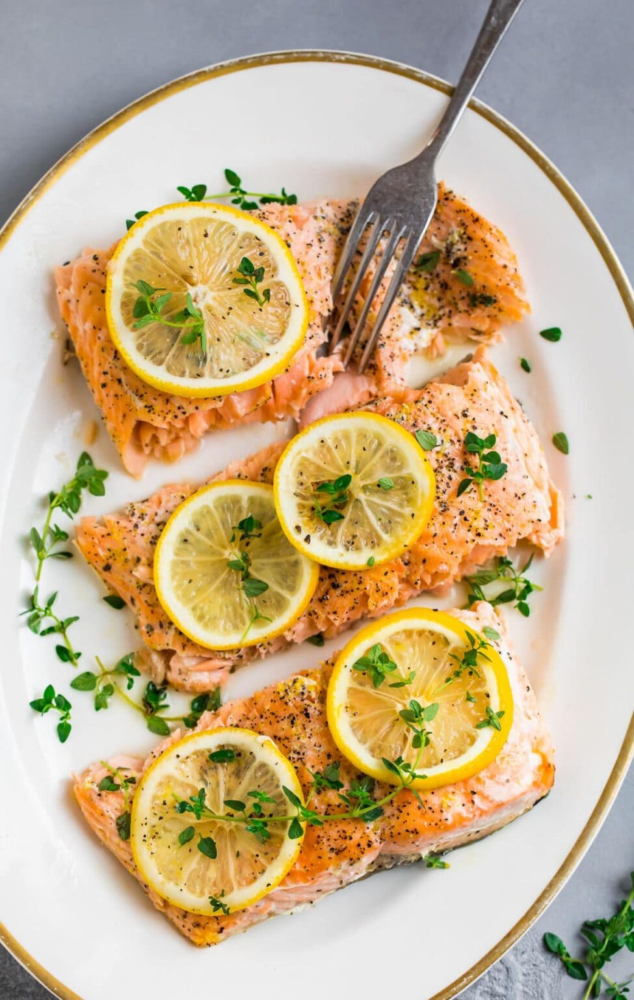

Lemon Pepper Salmon

Description
Tender, flaky salmon is spiced simply but sublimely, then baked in the oven in foil, this lemon pepper salmon is exactly the kind of recipe you and I need more of in our lives.
Ingredients
- Salmon
- Lemon
- Black Pepper
- Herbs
- Olive Oil
Steps
- Arrange the salmon on a sheet of foil, then drizzle with olive oil. Season, then top with herbs and lemon slices.
- Fold the foil around the salmon to make a packet. Bake salmon at 375 degrees F for 18-21 minutes as suggested in my baked salmon temperature guide, until the salmon flakes easily with a fork.
- Top with herbs and lemon. ENJOY!